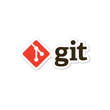

resumo de Git

O Git é um projeto de código aberto maduro e com manutenção ativa desenvolvido em 2005 por Linus Torvalds, o famoso criador do kernel do sistema operacional Linux. Um número impressionante de projetos de software depende do Git para controle de versão, incluindo projetos comerciais e de código-fonte aberto.
ACESSE O LINK DO CURSO DE Git
resumo de GitHub
O que é GitHub e para que serve? O GitHub é uma plataforma de desenvolvimento colaborativo que aloja projetos na nuvem utilizando o sistema de controle de versões chamado Git. A plataforma ajuda os desenvolvedores a armazenar e administrar o código e faz o registro de mudanças.
ACESSE O LINK DO CURSO DE GitHuB